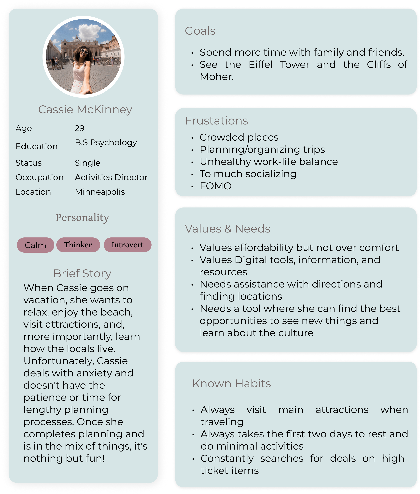
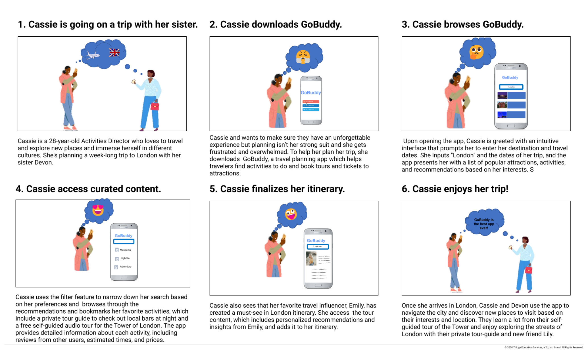
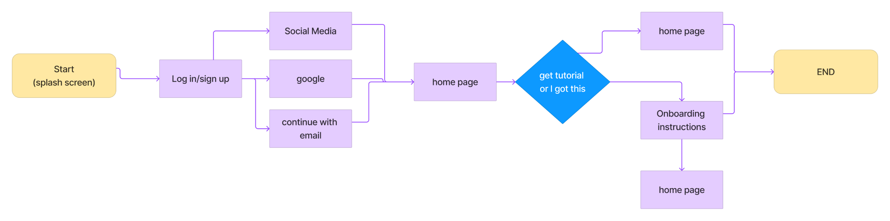

Explore the world with self-guided audio tours.
Figma, Google, Miro, InVision
Mobile App, Case Study, Individual Project
3 Weeks

I was the sole UX designer working on this mobile app case study project. As a part of the requirement, I had to brainstorm common issues travelers face in a post-pandemic world via user interviews and come up with a solution within 4 weeks.
How can I visit a new place and explore new cities, visit cultural attractions, or find hidden gems without having to spend a lot of money or interact with a lot of people?
To develop an app that allows travelers to enjoy and learn about popular tourist attractions of any nature—natural sites, historical, cultural, political, and more—without having to deal with the anxiety of group tours or having to use devices that others have touched in our post-pandemic world.
of respondents expressed planning travel plans were somewhat stressful.
of respondents expressed they would take an on-site self-guided tour with audio, video, or written assistance.
of respondents expressed they are not likely to take an in-person group tour when visiting a designation.
GoBuddy has both direct and indirect competitors. There are many big names among them, including TripAdvisor, Airbnb Experiences, VoiceMap, and Wanderlog. A number of these apps allow travelers to book transportation, lodging, and experiences all at once. VoiceMap, in particular, offers self-guided audio tours. In spite of this, it lacks a user-friendly interface and does not offer group or private tours. There are a number of services offered by the other three competitors which can be overwhelming. In order to differentiate itself, GoBuddy specializes in creating experiences through tours but give users what they want when it comes to finding a variety of activities to partake in. This analysis helped me understand the market and how this product can succeed.
A user persona was created based on the behavioral traits identified in my empathy map. Throughout the development process, it is essential to maintain a connection with the product user. Considering Cassie's pain points and goals, I focused on creating an application that allows her to discover new places at her own pace. I also included options to make connections when she's feeling social.
I mapped out the Cassie’s journey via a storyboard. This allowed me to visualize her life and what interactions she will experience using GoBuddy.

Based on the user interviews and survey, I analyzed what features are top priority. I determined that users need the ability to:
After gaining a clear understanding of Cassie’s path, I focused on mapping out her happy path. After I was able to dig deeper into the process and created a second iteration of the user flow mpa.
User Flow Iteration 1
User Flow Iteration 2

Based on the information above, I moved straight into wireframes. Wireframes were built for three processes: Onboarding, Searching & Filtering, and booking a tour. Decisions were made based on user interviews and expressions of likes, wishes, wants, and needs. I also took into account industry-standard design aspects.
For example, I included social logins, adding filtering options that focus on activities fit for different personalities and not just booking or buying tours. I also developed a feature where users can link to Google Maps when taking self-guided tours to avoid getting lost, which was mentioned several times as a potential stressor. It also allows breeds familiarity and trust because it is a tool most users were familiar with and mentioned during interviews.
I created a clickable prototype in InVision based on my sketches for testing. This was my first time using the tool, and it allowed me to get familiar with the design tool. I eventually created a mid-fidelity porotype in Figma, and I was able to conduct five user tests. During the user test, users had to complete onboarding, use the search features to find and save a tour in London, then find a nightlife tour and book it. I then made iterations based on critical issues discovered during testing.
In the first iteration, the option to create an account needs to be bigger and easier to see. I assumed users would want to sign in with their social networks, so I made this option smaller. Based on feedback, I added a Create Account button. I also added more social login options per their feedback.
To enhance the search feature, I added trip details such as itinerary, price range, and the number of guests. Additionally, I discovered that I included too many filter options. As a result, I reorganized, retested, and narrowed down the filters.
Final Thoughts: This project taught me a lot about Design Thinking. During my journey, I learned how important it is to ask many "whys." In addition, I learned to refrain from making assumptions based on how I think users will interact with something rather than getting proof. I thought users would want an app focusing on producing quality self-guided tours, but after analyzing the data, I realized people like options - there is no one-size-fits-all answer.